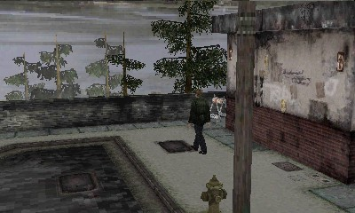

Nintendo 3DS
Silent Hill 2
A native port of the PC Director’s Cut, with the Enhanced Edition’s fixes built in.


sh23ds
ANKUSH.ONE/SH23DS
Nintendo 3DS
A native port of the PC Director’s Cut, with the Enhanced Edition’s fixes built in.
